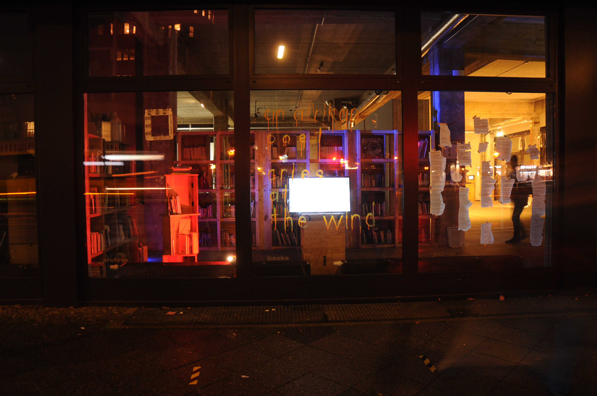
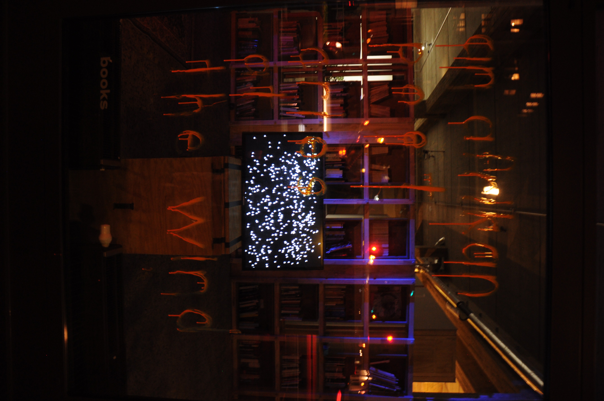

To make any friend, be desperate like you’re trying to make your first friend in a jungle where they eat small animals and you are a small animal.
Your parents shouldn’t have given you a name with so many rises and falls in its character.
See a girl that also wears shorts and even though she gives you the stank eye, smile at her like you’re sisters.
Think of your dad.
A face you remember would stalk you in the shadows. Leave meeeeee, you would say, I’m going to shout. Leave meeeee, he would mock as he finally leaves.
Chuckle back at the girl on a bike that chuckles when you miss the green light. She is laughing with you.
// do not stand legs criss-crossed.
// do not make eye contact.
Envision your panic attack in the uban.
Envision something else.
Find solace in the boys laughing their hearts out, tears streaming from their eyes. They stop to wipe them every few seconds.
When you look up from your phone and you find them looking at you — know they are looking past you, towards the doors that lead outside.
In 2012, before he would disappear for years to reinvent himself, Burna Boy released a song called Like to Party. This was one song amongst others that marked a distinction between what Nigerian music was and what it would come to be. Like to Party was released at the genesis of an incubation period for Nigerian music, a time where Nigerian music and culture was being redefined as an exportable entity that could hold its own space and take center stage on the cultural scene of the world. Watch
Nigeria has been an exporter of Black culture and music. Language and style have been deeply steeped into the content that is created and exported across the globe. Bobby Benson’s Taxi Driver is itself a story: “If she marry taxi driver, I don’t care, If she marry lorry driver I don’t care, if she marry railway driver, I don’t care,” because in a country where class matters almost as much as survival, to be a taxi driver or to marry one is to be put to shame. To say you don’t care is to be defiant. In Jim Rex Lawson’s Jolly Papa language is itself a musical instrument. The gentle saunter of Sir Victor Uwaifo’s Joromi is unmatched, and his Guitar Boy / Mammy wata is folklore in the form of music. Meanwhile the seamless riff on his guitar is performance capable only of living, breathing rockstars — which he was. Listen
FESTAC ’77 took place at a time where Nigeria presided over the world as the center for celebration and corroboration of Black art and Black culture. It became one of the most important events in what John Collins in his book Highlife Giants: West African Dance Band Pioneers calls a transatlantic Black musical feedback cycle — the movement of musical talent, context, and content exported and exchanged back and forth across the Atlantic. During FESTAC ’77, which took place in Lagos in 1977, Black careers were made timeless here in Nigeria, in Africa, on our very own earth. The mystical Sun Ra shares stage with the virtuoso, abami eda, Fela Anikulapo — the deathless one with death in his pocket — Kuti. Fela Anikulapo-Kuti, an uncommon composer and one of the most sampled musicians in the world, invented a genre of music which Africa and the whole world would come to tout, love, and celebrate. My favorite Fela is the Fela who has eyes for only one person, the Fela in love. “Ololufe mi, Iwo ni mo fe,” he sings. The one who has my love, you are the one I love.
A creative residency in Maputo organised by the British Council and Southern Africa Arts. exploring the nigerian women "question" using p5js, poetry, and media from a women's clinic in lagos.
Residency · Festival

An attempt to build a reading economy for African poetry outside the hierarchies of publishing and curation. A database of poems scraped from the internet, sent one by one, at random, to people who signed up to receive them. The archive as redistribution. Goethe Institut Lagos-Berlin residency.
Installation · Archive · ResidencyVideo essay and text installation on wood. Made with Bo Bannink. a piece about how bearable the lightness of goodness can be — the essay underneath it, The Madness of Good Thoughts, published in A Long House, January 2021.
Video Installation · Co-creationI LOOKED AT a girl and she reached down to cover her cleavage, her fingers pulling at the neckline of her blouse as though I were a man. Maybe I am. I live on a campus where buildings float on water and I still don't love it. Maybe I would love it if my friend were still here. Your mum looks down on me, I should say. She wishes I was white.
Maybe because I wish I were white.
Which I don't. Which would mean a fight and I have not gathered enough momentum yet. My whole existence is a fuck you to the rigidness of these systems, their jaws set in place like iron. So I am always fighting. Imagine fighting. When I accept I am a dead man walking I stop fighting. Which means the systems are crumbling. Which means there's nothing like blind optimism. Which means — I have not separated myself from myself but from the idea of myself which is
Good.
*
I ONCE DESCRIBED myself as a dancing thing: I am Toni Morrison dancing carefree, big tits hanging like mangoes. Toni Morrison danced braless in the wake of her working and I found liberation there. A. was my liberation.
I mean it that she was.
Brilliant Nigerian Writer, she wrote as the subject of the email she sent to an editor who said, This isn't quite right for us. That is to say, You are not quite right for us. That is to say, You are not quite good enough.
One morning I had awoken and traced my thoughts. I could not stop thinking about "the madness of good thoughts". I think it's absolutely mad to constantly have good thoughts, and especially now, almost impossible.
After therapy, the day before, when April took my thoughts apart and showed me I could hold them still and full in my hands as tangible things, I fell asleep and woke with mindfulness. Registering every thought, feeling, sensation in the body before they became judgment.
The madness of good thoughts would give one enough strength to pour oneself a glass of water and make oneself a cup of ginger tea, garlic, and other sediments swimming atop it, while one settled into their morning rhythm, the sun absolutely insistent on its own light, smiting and enriching all in its reflection.
The trees say thank you and so do I, my head mad and full with good thoughts.
Het Nieuwe Instituut launches the digital publication For the Record: On the Politics of Music Video Culture, the outcome of a multi‑year public research initiative. The project investigates how contemporary music video culture operates as a public space for consumerism, activism and emancipation, by documenting and reflecting on the technologies, spatial design and forms of representation deployed in music videos and live events. Its main methodologies include public programmes, video production and tools for annotation.
Since MTV’s 1981 debut, the music video has been both controversial and transgressive — simultaneously affirming and questioning dominant forms of representation. Today’s platforms (YouTube, Vimeo, Instagram, TikTok and more) have expanded a diverse audiovisual landscape, enabling independent production, remix culture and networked publics. Through a growing collection of essays, playlists and video productions, For the Record invites readers to navigate via tags, links and queries, and to contribute with annotations or thematic video playlists.